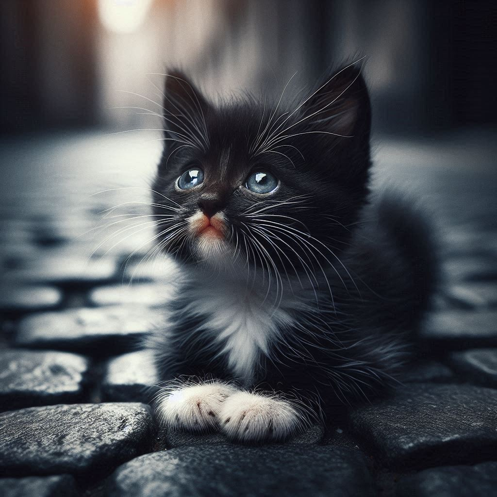

Como tudo começou...
A Patas de Veludo nasceu em 2018, do resgate de uma única gatinha abandonada, a Bebel. A paixão por ajudar aquele ser indefeso se transformou em um movimento que hoje conta com dezenas de voluntários e uma estrutura dedicada a salvar centenas de vidas felinas.
Missão, Visão e Valores
- Missão: Resgatar, reabilitar e encontrar lares seguros e amorosos para gatos em situação de vulnerabilidade, promovendo a conscientização sobre a posse responsável.
- Visão: Sonhamos com um mundo onde todo gato seja respeitado, cuidado e amado, e o abandono seja coisa do passado.
- Valores: Amor aos Animais, Comprometimento, Transparência, Ética e Respeito à Vida.